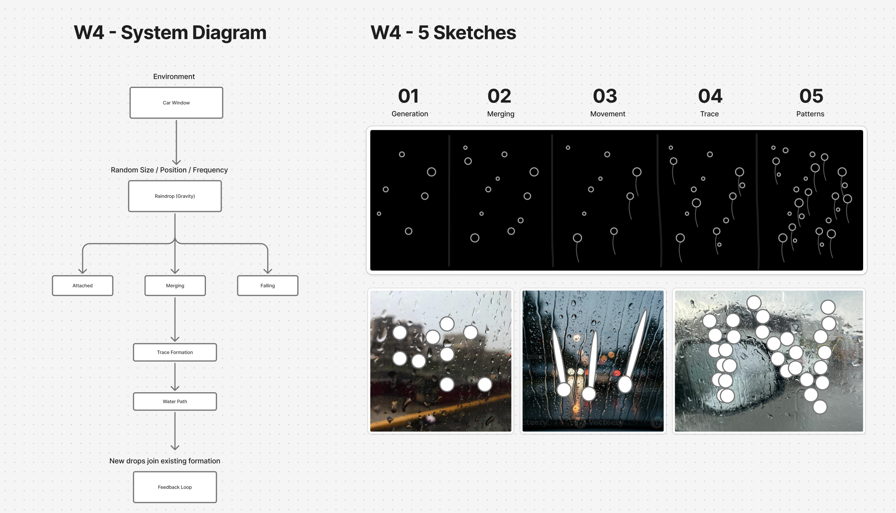
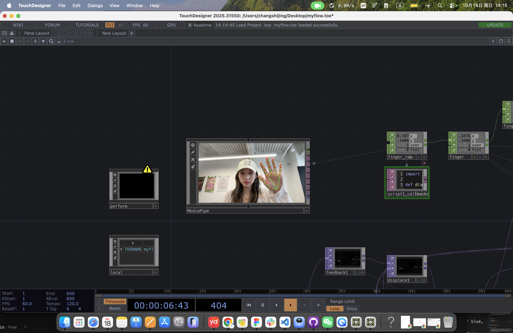
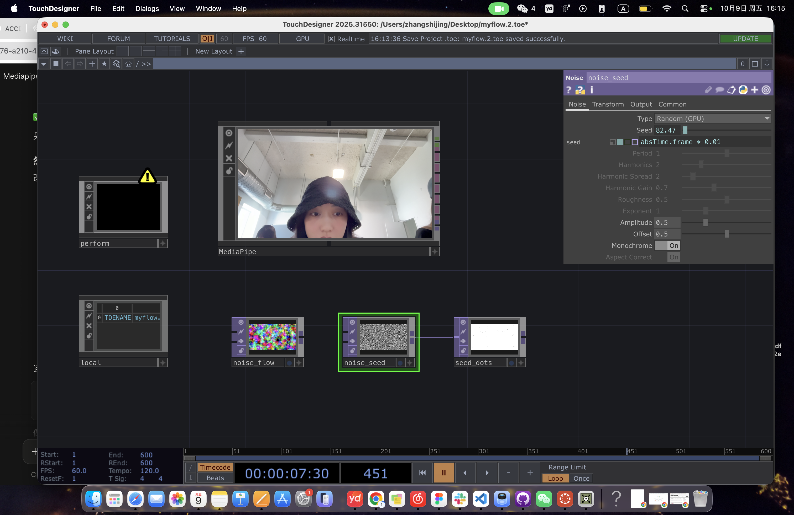
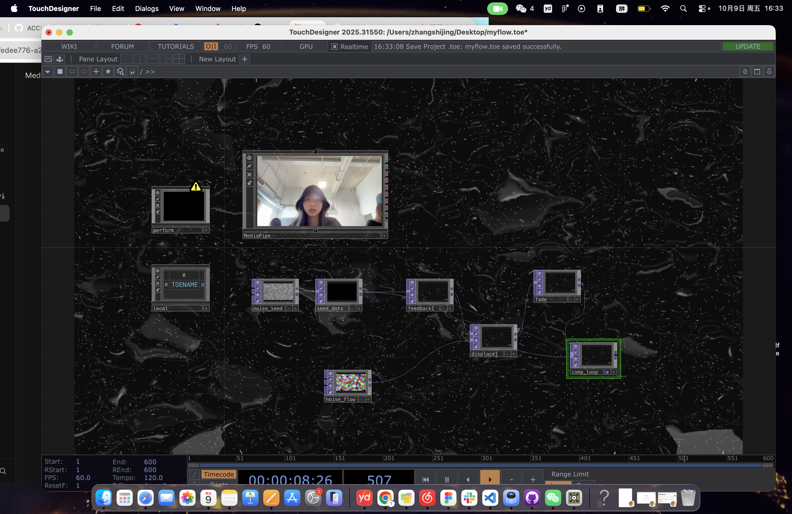
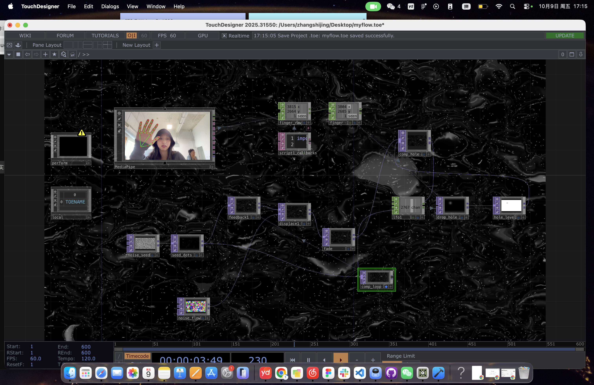
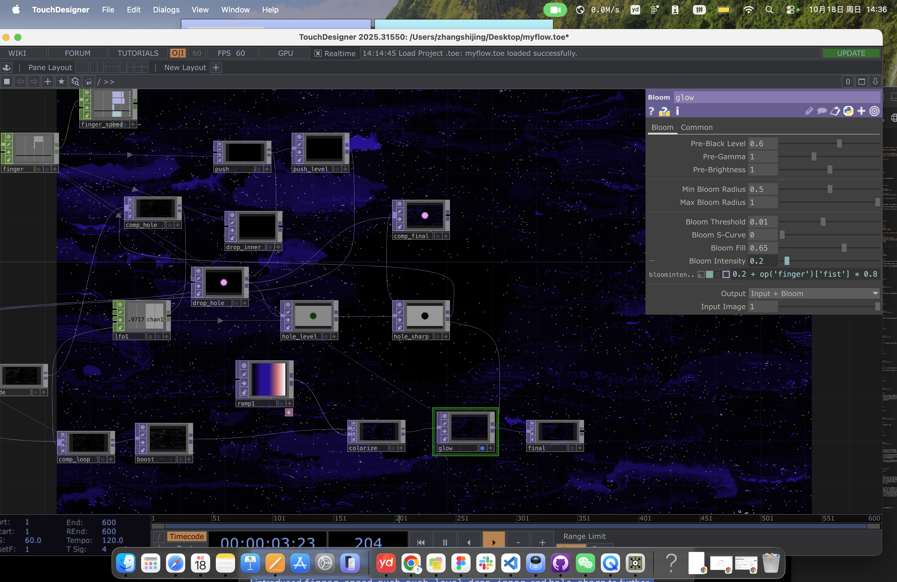
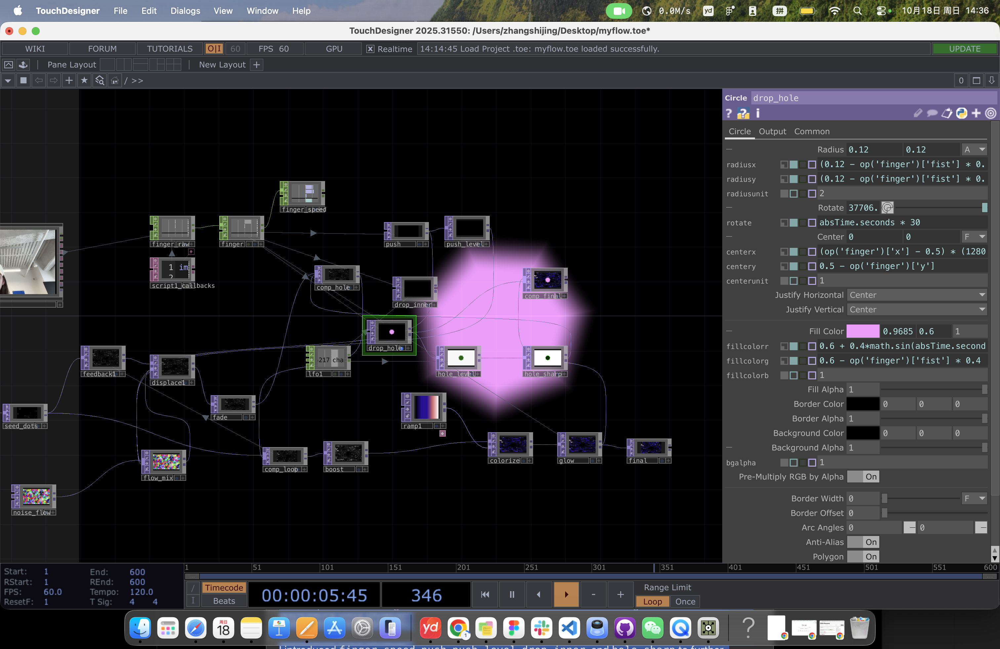
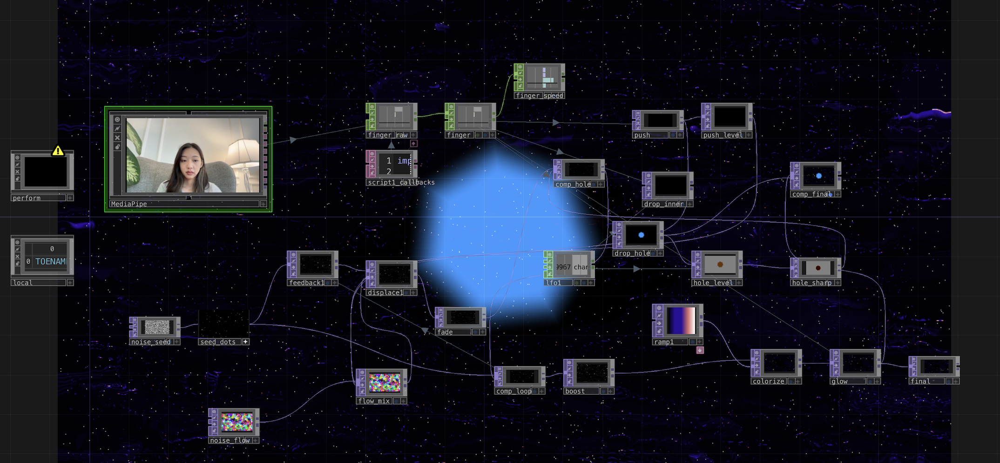

Touch Designer Project Documentation

This project is inspired by looking through a car window on a rainy night. Raindrops run down the glass, while streetlights appear blurred as colors in the background. When a finger touches the window, it interrupts the water and leaves a temporary trace. I recreated this experience as an interactive digital environment using light and movement. Through webcam hand tracking, viewers can interact with the flowing particles, changing their paths and leaving traces of light. This is my system map and drawings I did for the initial idea.
The flowing lines in the visuals simulate the trails left by raindrops sliding across a pane of glass, while the gradients of blue, purple, and pink simulate the blurred city lights seen on a rainy night. To enhance the sense of fluidity, I transformed the original grayscale particles into colorful gradients and applied a glow effect; I also slowed down their movement, making them appear more like raindrops intermingling with light. In terms of interaction, I replaced the simple circular light points with slowly rotating hexagons, representing the way raindrops refract light. These hexagons track the viewer’s palm, with their size adjusting based on how wide the hand is opened, integrating the user’s gestures into the visual composition. This project originated from a particle flow field example shown in class. Using TouchDesigner and MediaPipe hand-tracking technology. The entire system runs at 60 frames per second (FPS), allowing viewers to influence the flow of particles on screen in real time through their hand gestures.

I imported the MediaPipe TouchDesigner component to track the viewer’s hand through the webcam. The component can run face, pose, object and image models, but I kept only Detect hands and switched the rest off.

I started by experimenting with Noise TOPs to generate random visual patterns. I created noise_seed and connected it to seed_dots to produce scattered white dots, while noise_flow generated a colorful noise texture for later movement.

Next, I introduced a feedback loop using feedback1, displace1, fade, and comp_loop. The noise_flow texture was used to drive the displacement, so it continues to distort the previous frames. Through this process, the original dots began to stretch, accumulate, and form more complex patterns. Also, I used a fade effect to reduce the visibility of older frames, allowing the patterns to change rather than remain permanently on the screen. The resulting simulation produces flowing textures that resemble liquid surfaces. It is interesting to see how simple random dots can gradually develop into complex visual structures through repeated transformation.

I used MediaPipe to track my hand and extract the fingertip position through finger_raw and finger1. I then added lfo1, drop_hole, and hole_level to create a circular disturbance area, which is combined with the existing flow through comp_hole. The intended interaction is that when I move my finger in front of the camera, the circular area follows my fingertip and interrupts the flowing patterns around it. Instead of controlling individual particles, the finger creates a localized disturbance, temporarily clearing or changing the flow in that area. As the finger moves away, the simulation continues to evolve through its feedback loop.

I added ramp1, colorize, and glow to transform the grayscale patterns into a purple-blue environment. I also adjusted the circular interaction's rotation, color, and bloom intensity to create a softer, more dynamic glowing effect.

I further developed the finger interaction by linking the position and radius of drop_hole to the MediaPipe hand-tracking data. I also added rotation and subtle color changes to make the circular disturbance more dynamic. I introduced finger_speed, push, push_level, drop_inner, and hole_sharp to further experiment with the interaction effect. Finally, I added ramp1, colorize, and glow to transform the grayscale simulation into a purple-blue flowing environment with soft glowing edges

I combined the noise-driven flow, MediaPipe hand tracking, and circular disturbance into one interactive system. The background continues to evolve independently, while the viewer's finger movements introduce temporary changes to the flowing patterns, creating a responsive digital landscape.
My starting point was a particle flow field that a teacher showed in class, and my inspiration was raindrops on a car window at night. I wanted the world to feel like blurred lights and water paths seen through wet glass. The background are figurative. They are not a water simulation, but they borrow the look of trails (light on glass), and the palette references neon and traffic lights in the rain. My first idea was using my hands as blackhole to erase the background, like a finger wiping a window. However, after a few revision, it was still hard to see against the moving background, so I changed the approach. I tried a circle, a cross-shaped star and an orbiting satellite, and kept the hexagon because it was the clearest and rotated cleanly. I also reduced flicker by updating the random seed less often. The interaction is currently limited to one hand and one gesture. With more time, I would try to include both hands and more different gestures, so the hand disturbs the world itself instead of sitting on top of it. That would bring the project closer to the raindrop image I started with.